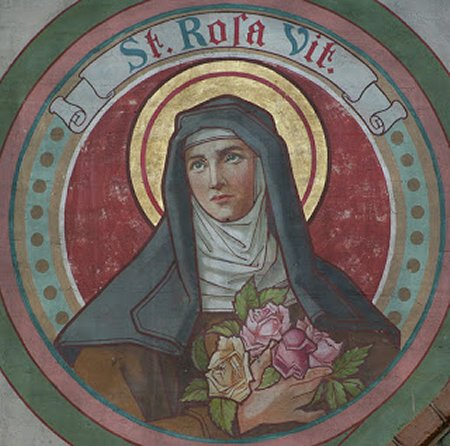
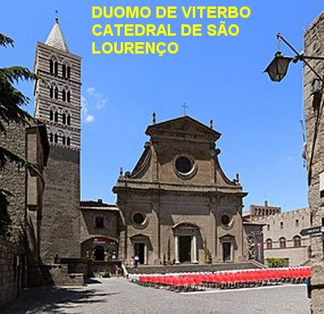
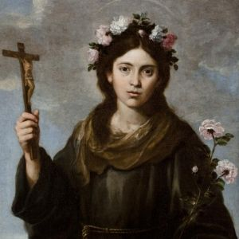

“NASCEU COM UM IDEAL”

LAR MUITO POBRE
Ela nasceu no dia 4 de Setembro de 1233, de uma humilde família em Viterbo, na Itália. Seus pais eram João e Catarina (Giovanni e Caterina), que batizaram a filha com o nome de Rosa em louvor a Santa Maria das Rosas. João trabalhava como jardineiro e também auxiliava na limpeza do Convento das Irmãs Clarissa, próximo a sua residência, em São Damião. E por isso mesmo, Rosa recebeu desde cedo, influência da espiritualidade Franciscana, pois as Irmãs Clarissa são o ramo feminino da Ordem de São Francisco de Assis.
Era uma época de muitas brigas, onde havia interesses violentos, palco de terríveis disputas. A Igreja, além de estar assolada pela abominável heresia cátara, que incrivelmente divulgava dogmas falsos e mentirosos contra o cristianismo, era também perseguida e desafiada pelo terrível Frederico II. O Imperador Alemão queria a todo custo, anexar parte da Itália aos seus domínios, e assim não hesitava em demonstrar claramente o seu desejo, de se apossar dos territórios pontifícios, entre os quais Viterbo que era o principal deles e o mais forte, no caminho para Roma.
Os hereges cátaros eram anticlericais, afirmavam que o mundo tinha sido criado por satã; não acreditavam na SANTÍSSIMA TRINDADE; eram contra o celibato, da mesma forma que não aceitavam e não acreditava nos Sacramentos instituídos por NOSSO SENHOR JESUS; eram extremamente violentos, perigosos e terríveis.
Estes mesmos hereges cátaros semeavam a rejeição às autoridades. A política italiana naquela época dividiu o povo em dois grupos ferozes e vaidosos, representados pelos simpatizantes do Imperador Germânico Frederico II, denominados “gibelinos”, e aqueles defensores dos bens da Igreja e do Santo Padre, o Papa Gregório IX, que eram denominados “guelfos” . Mas o ambicioso e terrível Imperador Alemão, informado que o exercito romano não estava bem, cercou e ocupou a cidade de Roma, depois de sangrenta luta. O Papa Gregório IX ficou pressionado por Frederico II, que pretendia exterminá-lo. O Pontífice, amparado pelos cristãos, conseguiu escapar a noite e foi se refugiar no Palácio Pontifício que existia em Viterbo, onde os “guelfos” eram numerosos e muitão fortes na cidade.
 Em 1240, com tramas renovadas e
grande poderio militar, os oficiais do abominável Imperador Germânico Frederico
II, ocuparam a cidade de Viterbo e passaram a tiranizar o povo. Nem os nobres
escaparam do terror dos
“gibelinos”. Com espírito de maldade, além
de colocar o povo no duro trabalho de construção de uma grande fortaleza na entrada
da cidade, colocaram também os nobres. Eles que não estavam habituados a este tipo
de serviço, como serventes, tiveram que trabalhar e com grande dificuldade transportaram
pedras e madeiras, realizando uma tarefa extremamente pesada, bem diferente daquelas
que estavam habituados a fazer.
Em 1240, com tramas renovadas e
grande poderio militar, os oficiais do abominável Imperador Germânico Frederico
II, ocuparam a cidade de Viterbo e passaram a tiranizar o povo. Nem os nobres
escaparam do terror dos
“gibelinos”. Com espírito de maldade, além
de colocar o povo no duro trabalho de construção de uma grande fortaleza na entrada
da cidade, colocaram também os nobres. Eles que não estavam habituados a este tipo
de serviço, como serventes, tiveram que trabalhar e com grande dificuldade transportaram
pedras e madeiras, realizando uma tarefa extremamente pesada, bem diferente daquelas
que estavam habituados a fazer.
Por outro lado, o perverso e vingativo soberano alemão ordenou que fossem presos todos os suspeitos de pertencerem ao partido dos “guelfos”, principalmente aqueles que pegaram em armas contra eles, os “gibelinos” ,inclusive se fossem nobres. As pessoas eram marcadas na testa com números, por meio de ferro em brasa, e eram trancafiadas em terríveis calabouços infectos, sendo em muitos casos, queimadas vivas. Foi uma época difícil para os habitantes da cidade, pois viviam sujeitos a todos os tipos de punições sem terem praticado nenhum crime. Muitas pessoas passaram miséria e fome, antes de também encontrarem a morte naquelas terríveis masmorras.
Foi de fato, um tempo terrível e triste, um período sangrento gravado indelevelmente na história da humanidade, e justamente nesse tempo nasceu e viveu a pequena Rosa, que só desejava o bem e o amor a todos. Mas, a realidade logo se delineou em cores vivas no coração dela. À medida que crescia, pode compreender a verdadeira santidade da Igreja, assim como a incrível e covarde torpeza repleta de maldade dos seus inimigos. No seu pequeno coração se definiam em luzes fortes as duas poderosas correntes do bem e do mal. E por isso mesmo, tranquilamente, no silêncio do seu espírito, procurou ajustar aquelas forças extrema: “amando sempre o bem” e “odiando e repudiando o mal”.
DESDE A INFÂNCIA REVELAVA VIRTUDES PRECIOSAS
Rosa, ao longo da sua infância,
na singeleza de seus hábitos infantis, deixava transparecer a exuberância da
sua santidade com clara evidência, que visivelmente 
Alegrava-se, quando lhe descreviam fatos da vida de Santa Clara, que viveu em 1212 com outras Monjas reclusas em seu Convento em Assis. Rosa ficava admirada e encantada com a impressionante descrição da tentativa de invasão do Convento da Santa pelos sarracenos, que queriam tomar posse do mesmo. O comandante sarraceno que era Frederico II, o mesmo Germânico terrível, a cavalo e com a espada erguida, na porta do Convento gritou para abrirem as portas que ele queria entrar. Santa Clara que estava doente num leito pediu que a transportasse até a Porta Principal do Convento, pelo lado de dentro. Ordenou que lhe trouxesse o Ostensório de Marfim com JESUS SACRAMENTADO. E estando todas as Monjas ao redor da sua cama, elevou o SANTÍSSIMO SACRAMENTO, e rezou uma fervorosa súplica ao SENHOR DEUS, pedindo que livrasse as suas filhas das investidas do maligno. A resposta DIVINA foi imediata. O cavalo do herege, assim como os outros animais da tropa que o acompanhava, relinchou e começaram a empinar sucessivas vezes, quase ao mesmo tempo, ameaçando jogá-los ao solo. O terrível conquistador meio desconfiado com os acontecimentos puxou as rédeas do seu animal e acompanhado pelos soldados da tropa, deu meia volta e abandonaram o local!
Conta-se também que, certo dia, pessoas da casa de seus pais, surpreendeu a menina Rosa em orações, no seu quarto; ela estava cercada de passarinhos que haviam entrado, e esvoaçavam ao seu redor, fazendo muita festa e alarido, sem duvida, atraídos pelo seu carinho infantil e tranquilo.
Um dos seus biógrafos descreve também que, tendo Rosa quatro anos de idade, faleceu uma irmã de seu pai. Ao saber da notícia, pediu para que a levassem á casa da tia. Diante do caixão mortuário ajoelhou-se, e elevou suas mãozinhas aos Céus, fazendo uma oração a NOSSO SENHOR JESUS CRISTO. Em seguida, de pé, colocou suas mãozinhas sobre as mãos da tia falecida e com tranquilas palavras lhe chamou pelo nome. A tia acordou! A surpresa foi geral! Milagrosamente pela Vontade de DEUS, a senhora ressuscitou.
CRESCIA ACOMPANHANDO A EVOLUÇÃO DA VIDA

Sobre este zeloso apostolado, escreveu outro de seus biógrafos: “Era comentário normal e sério que circulava no povo, que aquele procedimento dela levava DEUS a escutar sempre as suas súplicas. Inclusive alguns enfermos garantiam que ela os havia curado”. Sua tia, irmã de seu pai confirmava: “Devo-lhe a vida”. Sua mãe também dizia de coração aberto para todos: “Sem as orações da minha filha Rosa, tampouco eu estaria viva”. Também as suas coleguinhas e companheiras de estudos, tinham somente palavras carinhosas e de amizade para com Rosa. Uma delas narrou que levando o cântaro da família para pegar água na fonte, desastradamente deixou-o cair e quebrar. Chorando procurou Rosa e perguntou: “O que devo fazer minha querida, sua mãe vai ficar triste e se zangar comigo.” Rosa voltou com ela à fonte e durante a caminhada colou os pedaços daquele utensílio com um barro de liga muito especial. Mas o utensílio não dava para ser usado em plenitude, apenas conseguiu armazenar água com pouco mais da sua metade. Assim, na companhia da amiga voltou para casa, e a mãe, mesmo com aquele pequeno problema, ficou feliz e agradecida. Desse modo, aos poucos, com acontecimentos semelhantes ocorridos em oportunidades diferentes e com diversas pessoas, foi sendo sedimentada uma lenda a respeito do santo comportamento de Rosa.
Na verdade, todos esses prodígios naturalmente só podiam acontecer com alguém de uma admirável vida de piedade, e isso, Rosa possuía com fartura e autenticidade, embora fosse muito jovem.
FAZENDO PENITÊNCIAS
Seu quarto era uma estreita habitação. A luz do sol entrava por uma abertura com grades no alto da parede. Não possibilitava aquecimento, mas iluminava o ambiente, deixando-o bem acolhedor e ventilado. Ela passava longas horas rezando, ajoelhada naquele piso feito de um material batido e solado, semelhante ao cascalho, e por isso mesmo, com alguma irregularidade. Ali praticava austeras penitências, para consolar o CORAÇÃO DIVINO por causa dos pecados da humanidade. Muitas pessoas conseguiram observá-la ocultamente, e puderam presenciar aquela admirável manifestação espiritual da menina, realizada com seriedade e com o maior fervor. Com certeza, ali, durante as suas orações, ela recebia incontáveis comunicações sobrenaturais, que lhe proporcionavam um inigualável prazer e que também, orientavam a sua existência.
Sem dúvida, interiormente Rosa se sentia chamada para uma Vida no Convento... Todavia ela não tinha a idade mínima exigida pela Congregação, por isso não podia realizar o seu desejo. Por essa razão, na sua casa ela se empenhava para fazer igualzinho, como as Irmãs faziam no Convento, sempre rezando ajoelhada e, sobretudo, procurando compreender o conteúdo das leituras Sagradas, que com dificuldade ia conseguindo ler e entender.